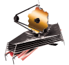

- Spoutnik 1
- 4 Octobre 1957
- Union Soviétique
- Premier satellite artificiel en orbite terrestre basse
- Hubble
- 24 Avril 1990
- Etats-Unis
- Les données collectées par Hubble ont contribué à des découvertes de grande portée dans le domaine de l'astrophysique telles que la mesure du taux d'expansion de l'Univers, la confirmation de la présence de trous noirs supermassifs au centre des galaxies ou l'existence de la matière noire et de l'énergie noire

- ISS
- 20 Novembre 1998
- Etats-Unis, Russie, Europe, Japon, Canada
- Station spatiale modulaire placée en orbite terrestre basse, occupée en permanence par un équipage international qui se consacre à la recherche scientifique dans l'environnement spatial
- Planck
- 14 Mai 2009
- Europe
- Télescope spatial, étude du fond diffus cosmologique dans le domaine spectral des micro-ondes. Permet de dresser plusieurs cartes reconstituant l'histoire de l'Univers

- JamesWebb
- 25 Décembre 2021
- Etats-Unis, Europe, Canada
- Ses capacités inédites dans le moyen infrarouge et en
spectroscopie (modes multi-objets et champ intégral) seront
utilisées pour approfondir nos connaissances dans les principaux
domaines de l'astronomie : formation des premières étoiles et des galaxies après le Big Bang,
composition de
l'atmosphère des exoplanètes